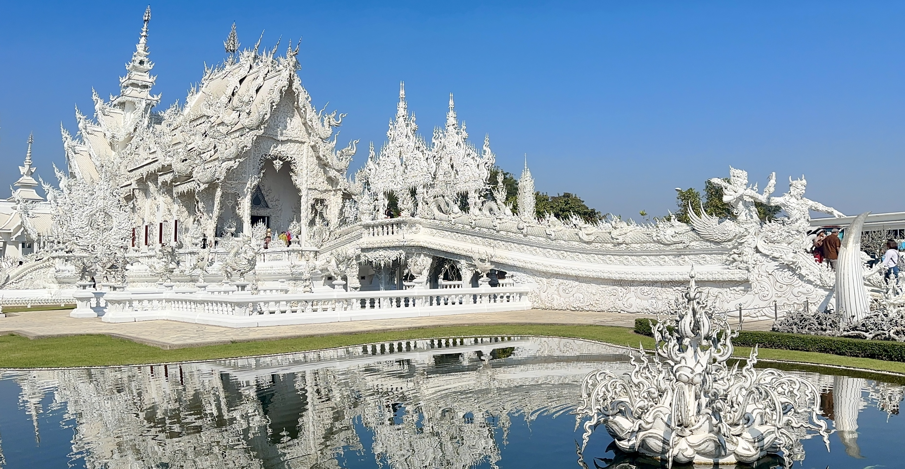
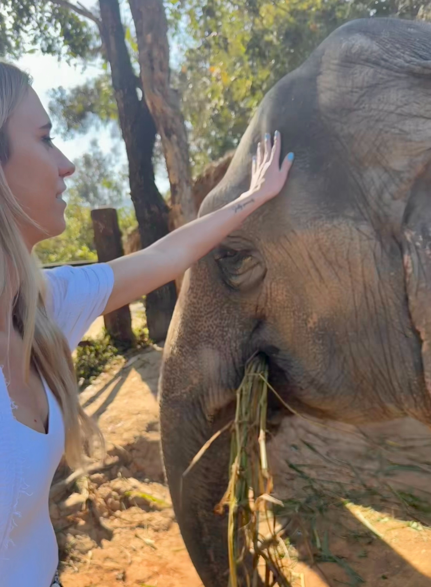

Chiang Mai
Chiang Mai, located in northern Thailand, is a city renowned for its rich cultural heritage, stunning temples, and beautiful mountainous landscapes. Known as the "Rose of the North," Chiang Mai offers a more relaxed and traditional atmosphere compared to the bustling cities of Bangkok and Pattaya. Visitors can explore ancient temples, vibrant night markets, and enjoy outdoor activities such as trekking, zip-lining, and visiting elephant sanctuaries. Also consider a day trip to Chiang Rai to see the beautiful and famous White Temple (Wat Rong Khun).
When visiting Chiang Mai, be sure to dress modestly when entering temples, covering shoulders and knees. The city is known for its cooler climate compared to other parts of Thailand, so pack accordingly, especially if you plan to visit during the winter months. Don't miss the chance to experience a traditional Thai massage or spa treatment, which Chiang Mai is famous for.
Must See
Some must-see attractions in Chiang Mai include:
- Elephant Nature Park: A sanctuary and rescue center for elephants where you can learn about and interact with these gentle giants in an ethical manner.
- Doi Suthep Temple: A stunning temple located on a mountain overlooking Chiang Mai, offering panoramic views of the city and surrounding countryside.
- Old City Temples: Explore the historic temples within Chiang Mai's Old City, such as Wat Chedi Luang and Wat Phra Singh, which showcase beautiful Lanna architecture.
- White Temple (Wat Rong Khun): Although technically located in Chiang Rai, this contemporary, unconventional temple is worth a day trip from Chiang Mai for its intricate design and stunning white facade.
Tutor Tips
Thailand Travel Tutor tips to help you plan and create your own memories in Thailand.
The Elephant sanctuary is a must visit when in Chiang Mai. Make sure to book your visit in advance as it can get quite busy, especially during peak tourist seasons. The santuary I visited provided transportation from Chiang Mai to the sanctuary and back which was very convenient. I highly recommend spending a full day at the sanctuary to fully experience and appreciate the work they do for elephant conservation. I got to hike to a waterfall and bathe the elephants which was an unforgettable experience. Here is a link to the sanctuary I visited: Chai Lai Orchid They also over lodging if you want to spend the night with the elephants.

